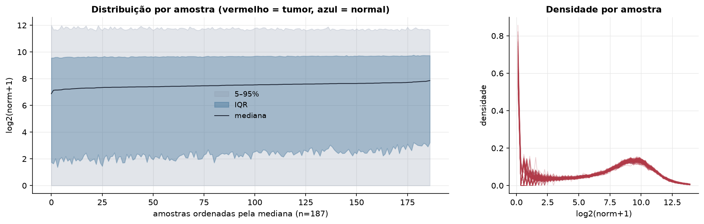
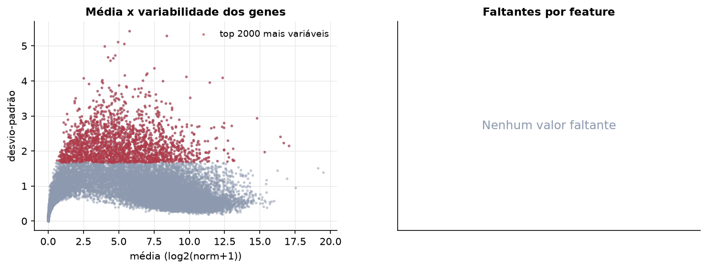
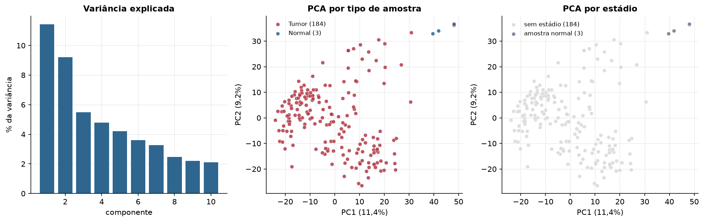
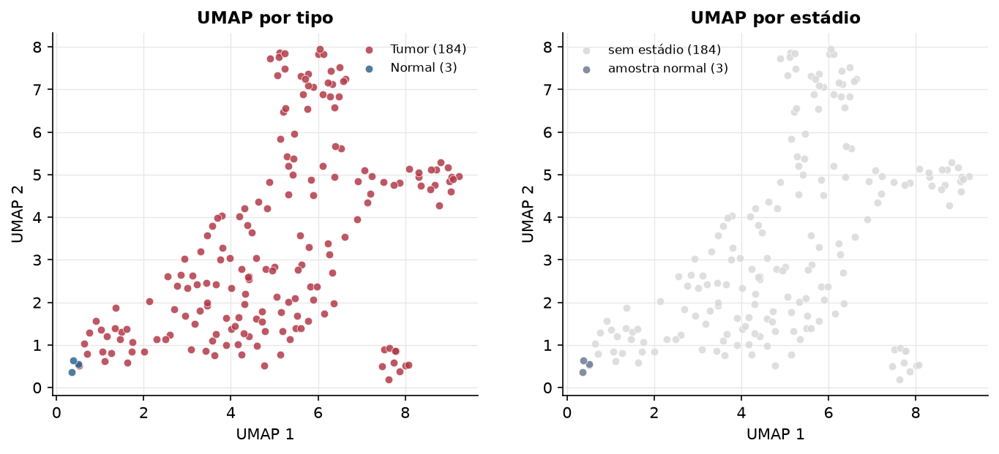
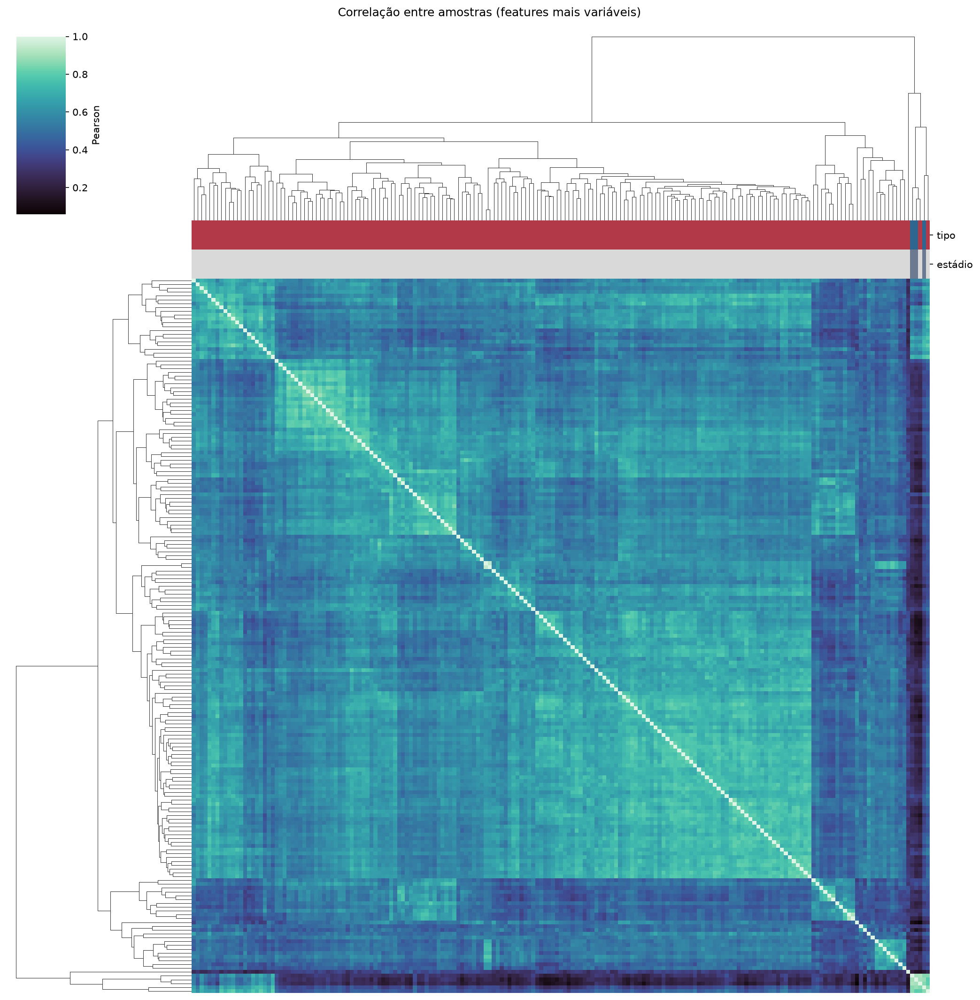
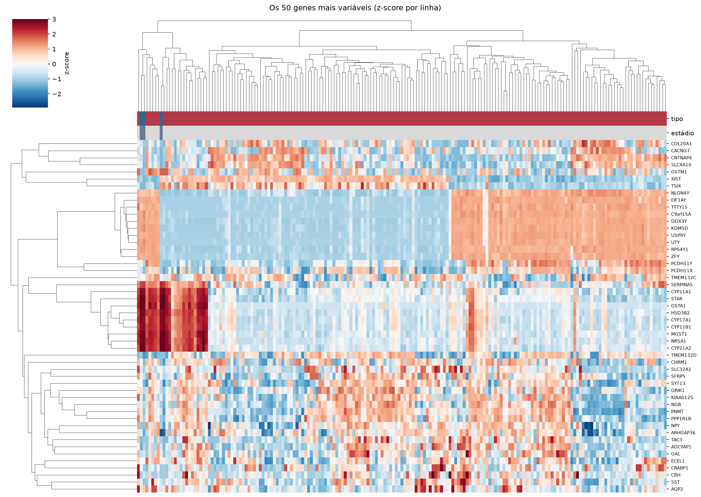
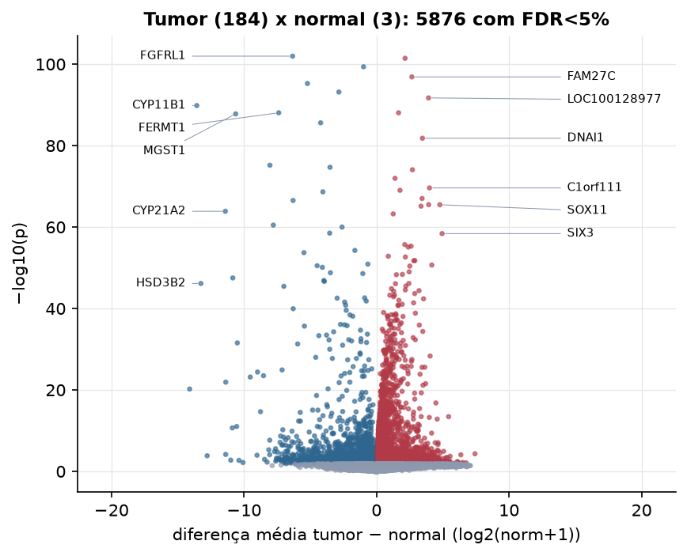
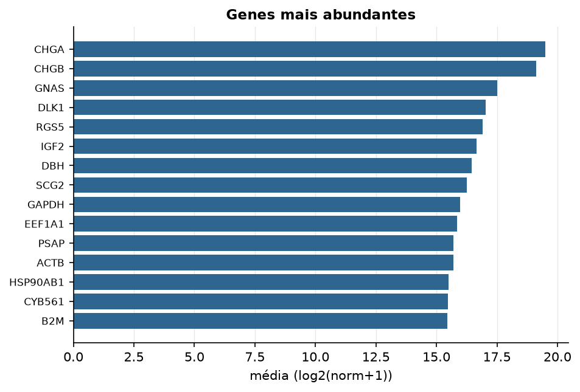

PCPG · RNA-seq (PanCanAtlas)
Illumina HiSeq, RSEM normalizado e corrigido por lote (EB++), log2(x+1) · gerado em 22/10/2026 02:41
20.531genes
184amostras tumorais
3amostras normais
0,0%valores faltantes
Fonte: PanCanAtlas EB++ via API do Xena
Estes valores já vêm normalizados e com correção de lote entre plataformas e centros. Servem bem para modelos gaussianos ou redes neurais; para um modelo de contagem use as contagens brutas do GDC.
Principais resultados
- 20.531 genes medidos em 187 amostras (184 tumorais e 3 normais); 0,0% dos valores estão faltando.
- Os dois primeiros componentes principais explicam 11,4% e 9,2% da variância das features mais variáveis.
- Correlação mediana entre amostras: 0,58.
- Amostras com correlação muito abaixo das demais (possíveis outliers técnicos): TCGA-P8-A5KD-11, TCGA-QT-A5XJ-01, TCGA-SQ-A6I4-11, TCGA-TT-A6YO-01.
- Tumor x normal: 5876 genes diferentes com FDR < 5% (3711 maiores no tumor, 2165 maiores no normal; 3 pacientes têm o par tumor-normal).
- Mais aumentados no tumor: SEPT8, FAM27C, LOC100128977, SLC35D2, DNAI1, MFSD4, MAGI2, C1orf111.
- Mais reduzidos no tumor: FGFRL1, MRPS35, BAIAP2L1, C14orf176, CYP11B1, FERMT1, MGST1, ACPP.
- Associações clínicas com p < 0,05 nos componentes principais: PC3 com sexo (p=0.033); PC1 com idade (p=0.042).
- Em mediana, 80,3% dos genes têm expressão acima de log2(norm+1)=1 em cada amostra.
Distribuição dos valores


Estrutura das amostras




Tumor x normal

Features mais diferentes entre tumor e normal
| diferenca_tumor_menos_normal | t | p | fdr | |
|---|---|---|---|---|
| FGFRL1 | -6.333 | -45.727 | 1.06e-102 | 2.13e-98 |
| SEPT8 | 2.154 | 48.487 | 3.54e-102 | 3.55e-98 |
| MRPS35 | -0.981 | -44.608 | 4.37e-100 | 2.92e-96 |
| FAM27C | 2.667 | 42.623 | 1.33e-97 | 6.66e-94 |
| BAIAP2L1 | -5.213 | -45.14 | 5.54e-96 | 2.22e-92 |
| C14orf176 | -2.84 | -40.572 | 6.88e-94 | 2.3e-90 |
| LOC100128977 | 3.923 | 40.029 | 1.89e-92 | 5.4e-89 |
| CYP11B1 | -13.564 | -38.779 | 1.45e-90 | 3.64e-87 |
| SLC35D2 | 1.661 | 41.691 | 8.55e-89 | 1.73e-85 |
| FERMT1 | -7.379 | -40.969 | 8.61e-89 | 1.73e-85 |
| MGST1 | -10.631 | -41.67 | 1.6e-88 | 2.91e-85 |
| ACPP | -4.218 | -36.774 | 2.5e-86 | 4.18e-83 |
| DNAI1 | 3.464 | 34.763 | 1.54e-82 | 2.37e-79 |
| GPR98 | -8.044 | -32.518 | 6.54e-76 | 9.37e-73 |
| PRKCD | -3.509 | -42.05 | 2.1e-75 | 2.81e-72 |
| MFSD4 | 2.708 | 33.067 | 8.39e-75 | 1.05e-71 |
| MAGI2 | 1.395 | 30.024 | 1.07e-72 | 1.26e-69 |
| C1orf111 | 3.995 | 29 | 2.42e-70 | 2.69e-67 |
| LOC730811 | 1.77 | 28.738 | 9.45e-70 | 9.97e-67 |
| ASS1 | -4.048 | -28.656 | 2.21e-69 | 2.21e-66 |
| SPRED3 | 3.437 | 27.861 | 9.66e-68 | 9.22e-65 |
| RBM47 | -6.297 | -43.93 | 2.96e-67 | 2.7e-64 |
| RPRML | 3.935 | 27.211 | 3.14e-66 | 2.74e-63 |
| SOX11 | 4.778 | 27.203 | 3.28e-66 | 2.74e-63 |
| FOXN4 | 3.357 | 27.054 | 7.33e-66 | 5.88e-63 |
| CYP21A2 | -11.409 | -41.608 | 1.34e-64 | 1.03e-61 |
| RNF180 | 1.257 | 26.845 | 5.87e-64 | 4.36e-61 |
| NOV | -7.787 | -38.151 | 3.31e-61 | 2.37e-58 |
| PYGL | -2.602 | -26.428 | 1.01e-60 | 6.99e-58 |
| THRB | -3.535 | -24.496 | 3.07e-59 | 2.05e-56 |
Associação com variáveis clínicas
p-valores da associação dos três primeiros componentes principais (só tumores) com estádio (Kruskal-Wallis), sexo (Mann-Whitney), idade (Spearman) e sobrevida global (Cox univariado).
| estádio (Kruskal) | sexo (Mann-Whitney) | idade (Spearman) | sobrevida OS (Cox) | |
|---|---|---|---|---|
| PC1 (11,0%) | 0.283 | 0.042 | 0.257 | |
| PC2 (8,6%) | 0.286 | 0.156 | 0.069 | |
| PC3 (5,3%) | 0.034 | 0.063 | 0.175 |
Mais abundantes
